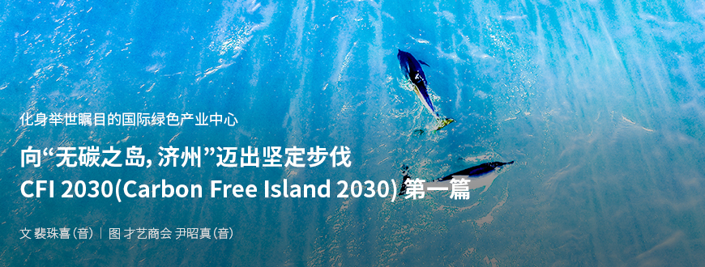
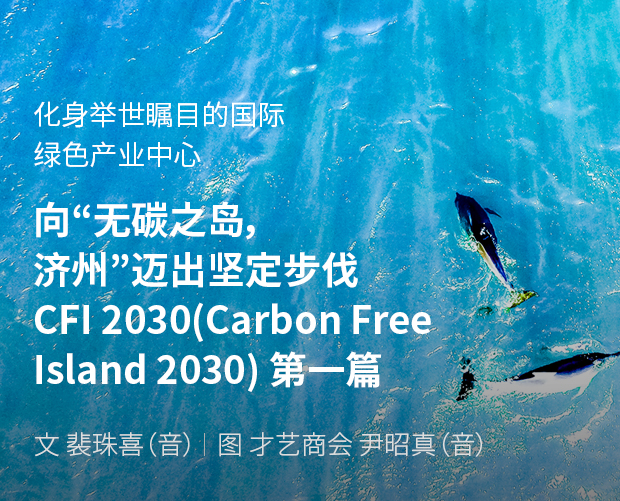
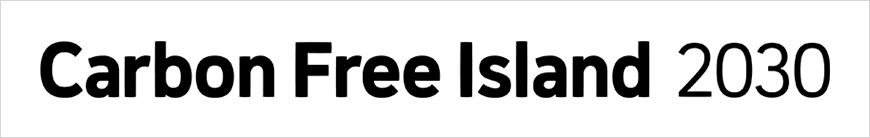
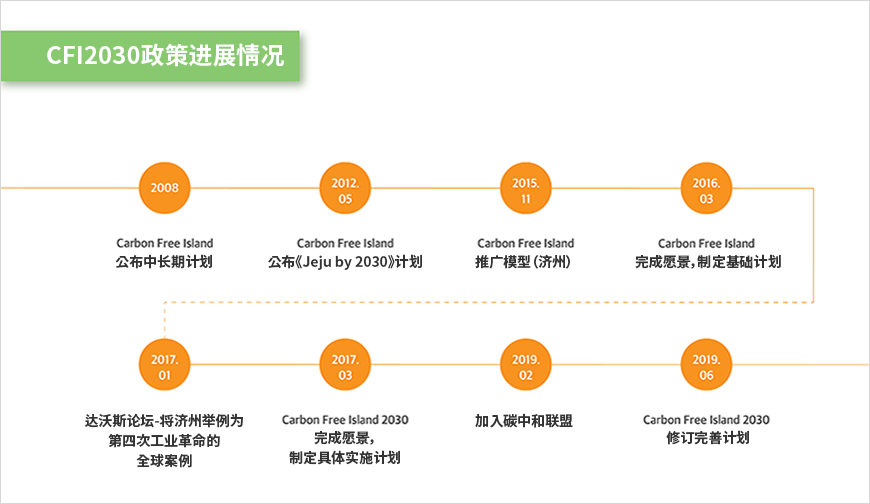
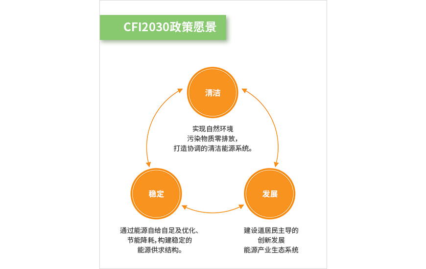
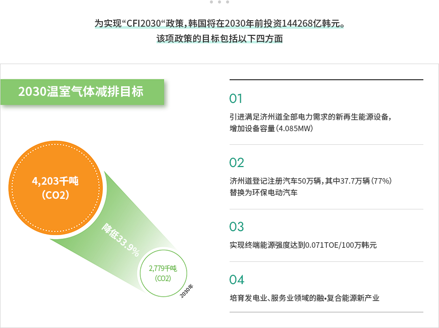

기획취재콘텐츠
- Home
- 제주라이프
- 기획취재콘텐츠
CFI 2030(Carbon Free Island 2030) 第一篇새로운 글


工业化的辉煌成就让人类丰衣足食，但也导致了环境破坏和资源枯竭。每当气候异常引发自然灾害时，人们总是会说“地球生病了”。这也从侧面证明，人们认识到了问题的严重，而且情况亟待改善。过去大肆开发、盲目发展的经济增长方式现如今日益遭人诟病，可持续、共存这两个关键词逐渐成为了发展的关键。
1992年，里约会议通过了《气候变化框架公约》，这也意味着减少温室气体排放开始获得世界范围内的共同响应。此外，2015年12月通过的《巴黎协定》于今年正式生效，包括韩国在内的195个有关国家有义务参与温室气体减排工作。在新气候体制时代，济州道果断先发制人，主动出台《无碳之岛，济州2030（Carbon Free Island 2030，以下简称“CFI 2030”）计划》这一新政策，与国际趋势同轨共进，在变革环保产业结构以应对气候变化的同时，重视稳定增长，致力于将济州打造成引领绿色产业发展的国际中心。

先发制人，迈向“无碳之岛”——济州CFI2030规划
“CFI2030”计划最早可追溯至2008年。为应对国际高油价时代（每桶高达100美元），韩国在当时出台了名为“Carbon Free Island”的中长期计划，其核心是济州道独有的节能政策以及济州的可再生能源，旨在减排温室气体、实现能源自给。2012年5月，韩国又推出了融多项政策于一体的“济州型低碳绿色增长模式‘Carbon Free Island Jeju by 2030’计划”，“Carbon Free Island”也随之在世界范围内获得广泛关注，如今逐渐发展成为济州道的核心政策。


CFI2030政策进展情况
- 2008-Carbon Free Island 公布中长期计划
- 2012.05-Carbon Free Island 公布《Jeju by 2030》计划
- 2015.11-Carbon Free Island 推广模型（济州）
- 2016.03-Carbon Free Island 完成愿景，制定基础计划
- 2017.01-达沃斯论坛-将济州举例为第四次工业革命的全球案例
- 2017.03-Carbon Free Island 2030 完成愿景，制定具体实施计划
- 2019.02-加入碳中和联盟
- 2019.02-Carbon Free Island 2030 修订完善计划

“CFI2030“的蓝图可概括为三个关键词：清洁、稳定、发展。即实现自然环境污染物质零排放，打造协调的清洁能源系统，通过能源自给自足及优化、节能降耗，构建稳定的能源供求结构，建设以济州道居民为主导的创新发展能源产业生态系统。该规划既包含新气候体制下的国际合作，还强调在保证济州道能源稳定和自给自足的过程中，应打造并发展有利于济州道居民的产业生态系统，巩固济州特色能源产业结构。

- 清洁 - 实现自然环境污染物质零排放，打造协调的清洁能源系统。
- 发展 - 建设道居民主导的创新发展能源产业生态系统
- 稳定 - 通过能源自给自足及优化、节能降耗，构建稳定的能源供求结构。


为实现“CFI2030“政策，韩国将在2030年前投资144268亿韩元。该项政策的目标包括以下四方面
2030温室气体减排目标-4203千吨（CO2） → 2779千吨（CO2） (降低33.9%。)
- 一、引进满足济州道全部电力需求的新再生能源设备，增加设备容量（4085MW）
- 二、济州道登记注册汽车50万辆，其中37.7万辆（77%）替换为环保电动汽车
- 三、实现终端能源强度达到0.071TOE/100万韩元
- 四、培育发电业、服务业领域的融•复合能源新产业。

以上4个政策目标围绕电动汽车及新再生能源两个产业核心展开，旨在实现“CFI2030“计划。
이전글
이전글이 없습니다.